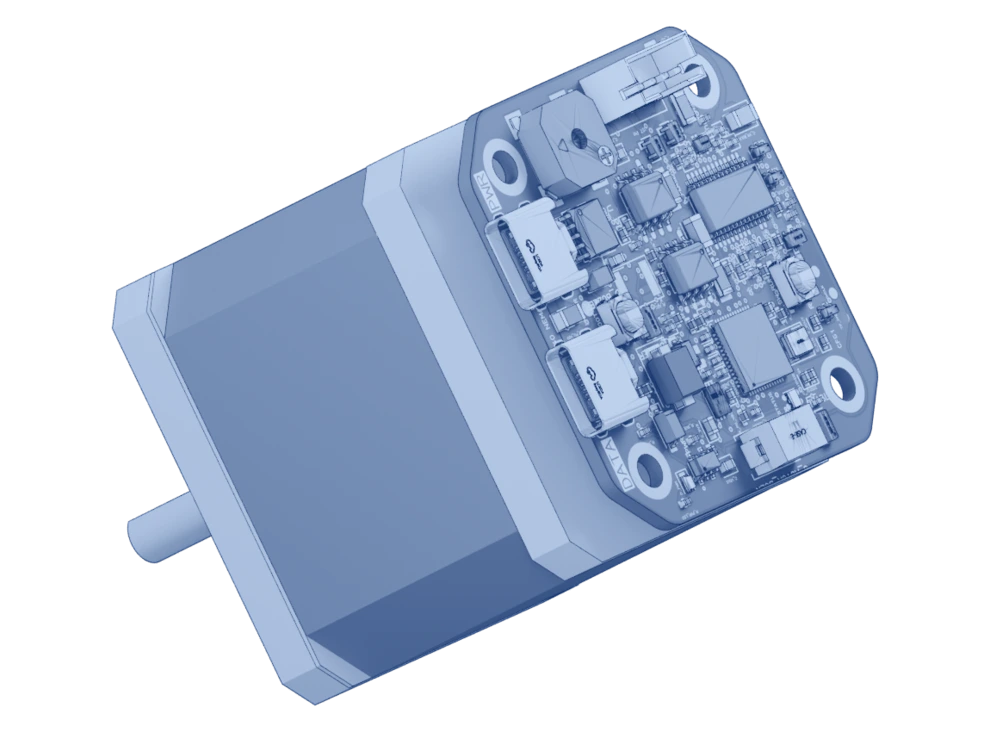

NEMA17 quick start
Make your
first move.
Connect your motor controller and try a quarter turn. We’ll walk you through it, one step at a time.
For USB control, use desktop Chrome or Edge.

Motor workspaces
Already set up? Choose how you want to move.
Single stepper
Jog one motor with your keyboard or the on-screen controls.
Multi-axis gantry
Move controllers together on two axes or three axes.
Brushless motor
Set speed and direction for your supported BLDC controller.
Can’t find your controller?
Use a USB data cable in the port marked DATA and open this site in desktop Chrome or Edge. Close other dashboards and serial monitors, then try connecting again. The NEMA17 kit booklet (PDF) has the wiring diagram and troubleshooting steps.